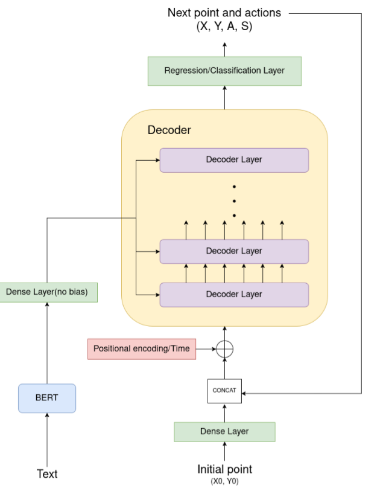

Research project exploring Transformer architectures for robotic trajectory generation from natural language commands.
This work is built on the premise that trajectory generation can be formulated as a sequence modeling problem [1]. In this framework, each sequence element consists of states, actions, and rewards. The system architecture draws inspiration from recent advancements in robotics and multimodal learning [3, 5, 6].
The core model consists of a classic Transformer Decoder [8]. Temporal dependencies are handled using sinusoidal and cosinusoidal positional encodings. Encoded text features are fed into the memory input of each decoder layer.
Text commands are processed using a pre-trained BERT model [9] to extract semantic relationships. The BERT output (1 x 768) is projected to the decoder's d_model dimension via a linear layer. Target inputs to the decoder consist of previously visited positions, while the starting tool position initializes the generation process.

Data is procedurally generated in Python and consists of a command label paired with a list of position/action tuples:
Currently trained models demonstrate high fidelity in generating trajectories for single shapes and spatial commands.
"draw large square in middle"